Istituto professionale statale
Arte Bianca di Neive
- Percorso di5 anni o 4+2
- Sede associata dell’I.I.S.S.“Piera Cillario Ferrero”
Orientamento 2027-28
Le date degli eventi
Vieni a conoscerci
Il modo migliore per scegliere la scuola è vederla da vicino: entrare nei laboratori, conoscere docenti e studenti, fare tutte le domande.
Quest’anno l’Arte Bianca di Neive apre le porte in due giornate di Open Day e Lab Day e partecipa agli appuntamenti di orientamento dell’Istituto.
Per partecipare è obbligatoria la prenotazione: basta compilare il modulo una volta sola, indicando tutti gli appuntamenti a cui si desidera partecipare.
In alternativa, è possibile prenotare telefonando allo 0173 67168 o scrivendo a artebiancaneive@cillarioferrero.it
-
12Giovedìnovembre 2026
Serata informativa di istituto
ore 18:00
Aula Magna della sede di Alba, via Balbo 8 -
21Sabatonovembre 2026
Open Day e Lab Day
a Neive, solo mattino
- 9:00 con laboratorio
- 11:00 senza laboratorio
-
28Sabatonovembre 2026
Salone dell’Orientamento
dalle 8:30 alle 18:30
Palazzo Mostre e Congressi di Alba
ingresso libero, senza prenotazione -
12Sabatodicembre 2026
Open Day e Lab Day
a Neive, mattino e pomeriggio
- 9:00 con laboratorio
- 11:00 senza laboratorio
- 14:00 senza laboratorio
Come si svolge l’Open Day
Con laboratorio
ore 9:00 · 21 novembre e 12 dicembre
- 1Presentazionein Aula Magna, per ragazzi e genitori
- 2Due laboratorii ragazzi lavorano in pasticceria e in sala-bar con docenti e studenti, fino alle 12:30
- 3La scuolaintanto i genitori seguono la presentazione della scuola
Senza laboratorio
ore 11:00 · ore 14:00 solo il 12 dicembre
- 1Presentazionein Aula Magna, per ragazzi e genitori
- 2Visita della scuolalaboratori e aule, alunni e genitori insieme, fino alle 13:00 o alle 16:00
Iscrizioni alle classi prime
Le iscrizioni per l’a.s. 2027/28 si fanno online sul portale Unica del Ministero, nelle date che il Ministero fisserà.
Per eventuali difficoltà nella compilazione della domanda, i nostri uffici restano a disposizione.
Un presente sereno,
un futuro sicuro
Entra nei laboratori, vivi la nostra scuola

Il video di presentazione della scuola
 300+realtà convenzionate per gli stage: laboratori artigianali, caffetterie, ristoranti, resort, alberghi e aziende dolciarieGli stage
300+realtà convenzionate per gli stage: laboratori artigianali, caffetterie, ristoranti, resort, alberghi e aziende dolciarieGli stage
 132mobilità all’estero degli studenti dell’Istituto nell’a.s. 2025/26, fra tirocini, corsi e scambiMobilità all’estero
132mobilità all’estero degli studenti dell’Istituto nell’a.s. 2025/26, fra tirocini, corsi e scambiMobilità all’estero
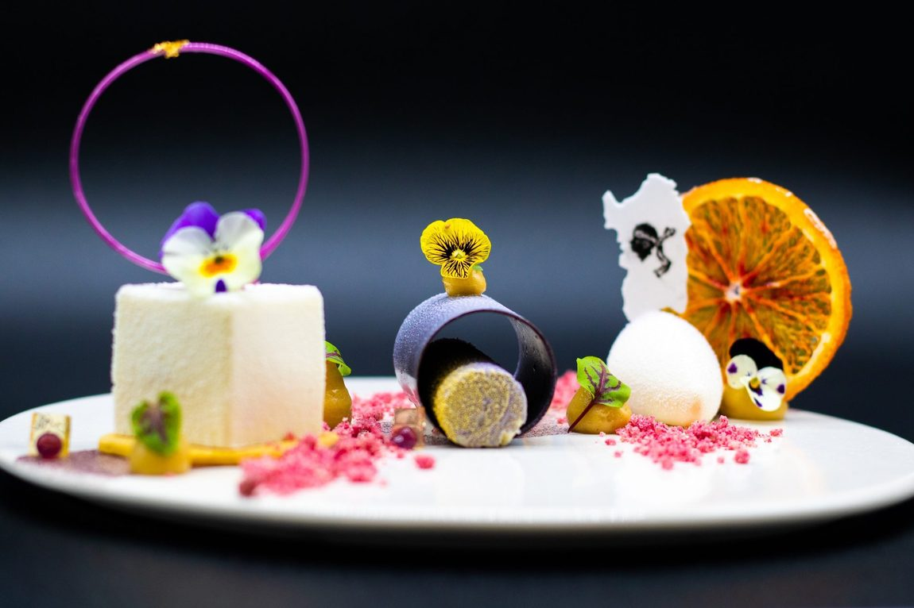
1°posto al Campionato nazionale di pasticceria 2022, con il dolce “Dromos”I concorsi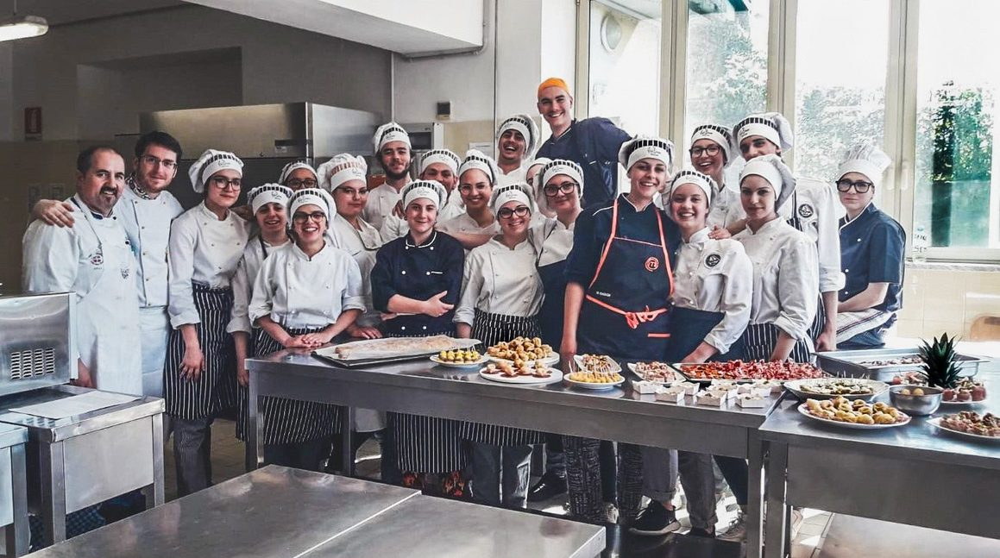
3laboratori di pasticceria, più un laboratorio chimico-biologicoI nostri spazi Università, ITS, lavoroil diploma apre tutte le stradeDopo il diploma
Università, ITS, lavoroil diploma apre tutte le stradeDopo il diploma
Neive
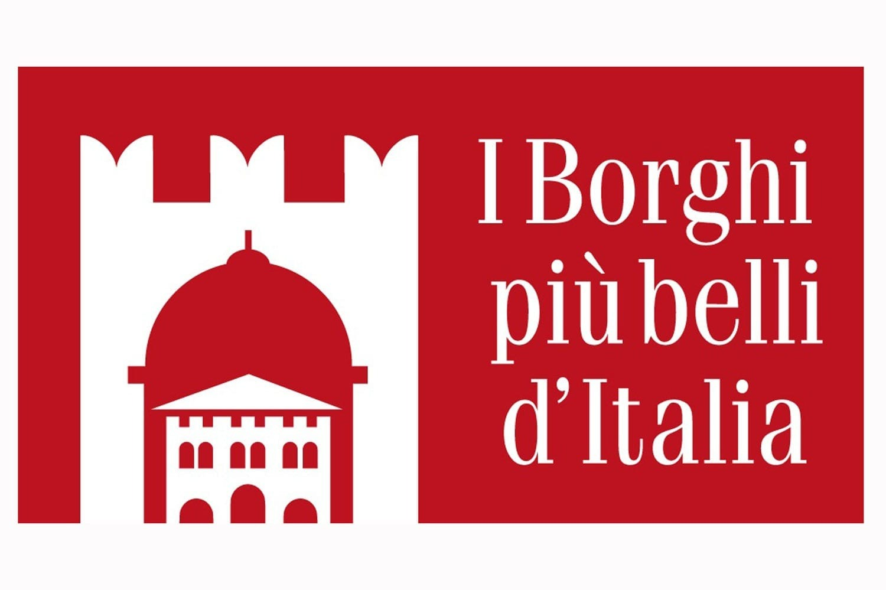
I Borghi più belli d’ItaliaL’Arte Bianca è una delle tre sedi dell’Istituto di Istruzione Secondaria Superiore “Piera Cillario Ferrero” e sorge nel cuore dello splendido borgo di Neive, situato nelle Langhe Occidentali fra Barbaresco e Castagnole delle Lanze, a poco più di 10 km da Alba.
Il piccolo borgo ha mantenuto l’antico impianto medievale con caratteristiche stradine in pietra e i palazzi color del cotto che, con i tetti rossi, richiamano i colori delle vigne d’autunno, quando le morbide colline delle Langhe si apprestano a secernere il loro frutto più prezioso.
Oggi Neive è inserita nel club dei Borghi più belli d’Italia.
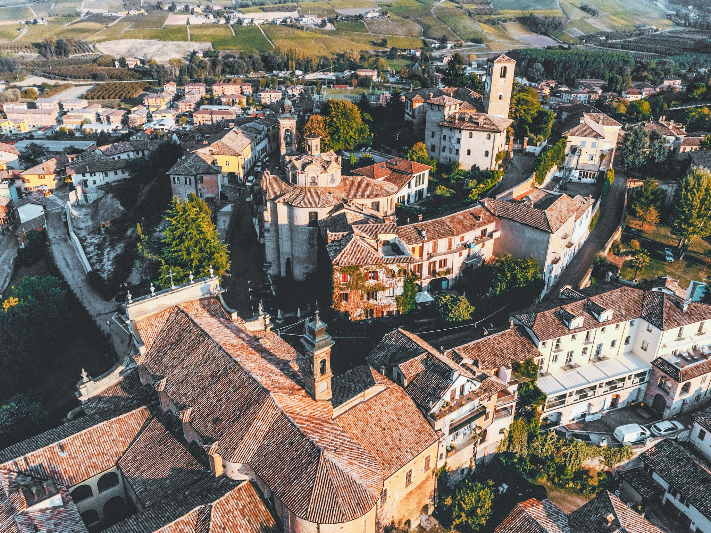
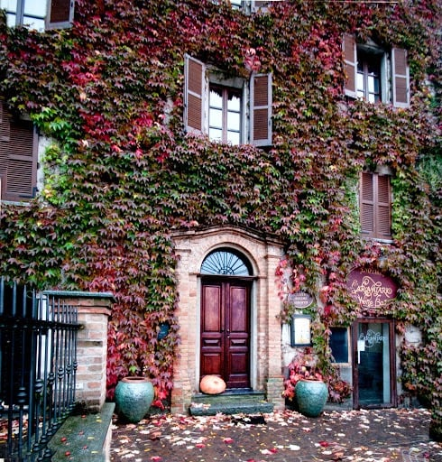
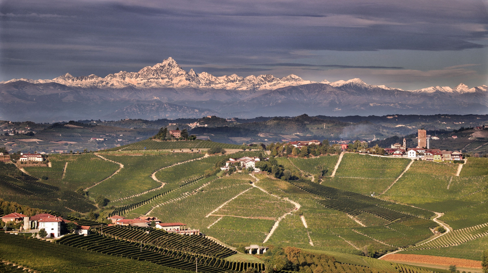
Un po’ di storia
Una storia lunga più di 30 anni
L’Arte Bianca di Neive è un Istituto Professionale Statale del settore “Servizi per l’enogastronomia e l’ospitalità alberghiera - Pasticceria e Arte Bianca”.
Nasce nel settembre 1988 come distaccamento dell'Arte Bianca di Torino (“J.B. Beccari”) grazie all’intuizione di don Giuseppe Cogno, parroco di Neive. L’Istituto, dall’a.s. 2000/2001, è sede associata dell’I.I.S.S. “Piera Cillario Ferrero” di Alba.
L’Arte Bianca ha recentemente festeggiato 30 anni di storia, insieme alla festa per i 50 anni dell’Istituto P. Cillario Ferrero.
La scuola ha mantenuto negli anni la sua specificità e ha sviluppato nel tempo rilevanti competenze nella formazione degli addetti alla lavorazione nel settore dolciario, sia artigianale (pasticcerie, panetterie, ristoranti, alberghi, villaggi turistici…) sia industriale (in particolare l’azienda Ferrero).
- 1988Settembrenasce come distaccamento dell'Arte Bianca di Torino (“J.B. Beccari”)
- 2000a.s. 2000/2001diventa sede associata dell’I.I.S.S. “Piera Cillario Ferrero” di Alba
- 2018Edificio del distaccamentoinaugurato insieme al nuovo laboratorio di pasticceria 3
- 20237 giugnoinaugurato il bar didattico “Social corner”
- 2024Laboratorio 1completamente ristrutturato
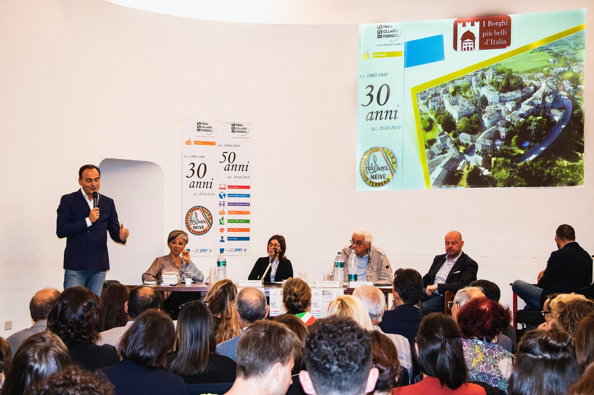
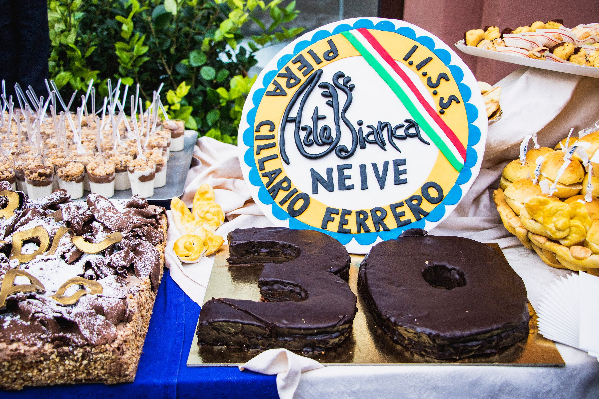
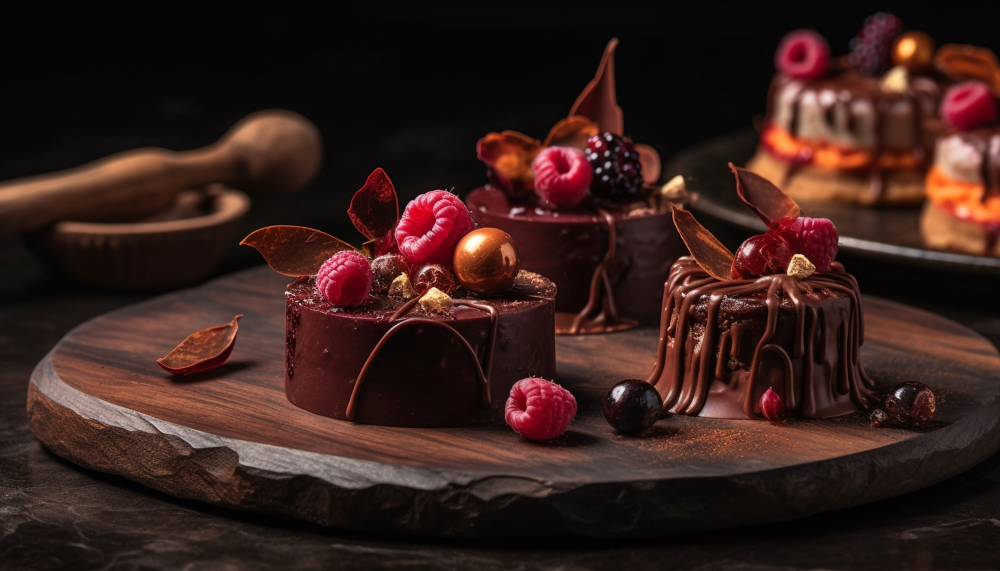
Piano di studi
Indirizzo «Enogastronomia e ospitalità alberghiera», Arte Bianca e pasticceria
Al termine del terzo annoQualifica regionale in Operatore delle produzioni alimentari - lavorazione e produzione di pasticceria, pasta e prodotti da forno
Al termine del quinto annoDiploma di istruzione secondaria superiore
| Materie | anno 1° | anno 2° | anno 3° | anno 4° | anno 5° |
|---|---|---|---|---|---|
| Lingua e letteratura italiana | 4 | 4 | 4 | 4 | 4 |
| Lingua inglese | 3 | 3 | 3 | 3 | 3 |
| Storia e geografia | 2 | 2 | 2 | 2 | 2 |
| Matematica | 4 | 4 | 3 | 3 | 3 |
| Diritto ed economia | 2 | 2 | - | - | - |
| TIC | 2* | 2* | - | - | - |
| Scienze motorie e sportive | 2 | 2 | 2 | 2 | 2 |
| R.C. o attività alternative | 1 | 1 | 1 | 1 | 1 |
| Scienze integrate (chimica) | 2* | 2* | - | - | - |
| Scienza degli alimenti | 2* | 2* | - | - | - |
| Seconda lingua straniera: francese | 2 | 2 | 3 | 3 | 3 |
| Lab. di servizi enogastronomici - pasticceria | 4** | 4** | 7 | 5 | 5 |
| Lab. di servizi enogastronomici - sala e vendite | 4** | 4** | 2* | 2 | 2 |
| Lab. di servizi di accoglienza turistica | 2 | 2 | |||
| Scienza e cultura dell’alimentazione | - | - | 3 | 3* | 3 |
| Diritto e tecniche amministrative | - | - | 3 | 2 | 2 |
| Analisi e controlli chimici | - | - | 1 | 2* | 2 |
| Totale | 32 | 32 | 32 | 32 | 32 |
*compresenze con docenti di laboratorio
**la classe viene divisa in due squadre
Al termine del quarto annoDiploma di istruzione secondaria superiore, con lo stesso valore legale del diploma di cinque anni
| Materie | anno 1° | anno 2° | anno 3° | anno 4° |
|---|---|---|---|---|
| Lingua e letteratura italiana1° e 2° anno: 1 ora con Diritto | 6* | 6* | 4 | 4 |
| Lingua inglese1° anno: 1 ora con Accoglienza turistica | 4* | 3 | 4 | 4 |
| Storia1° anno: 2 ore con Geografia2° anno: 1 ora con Diritto | 2* | 2* | 2 | 2 |
| Matematica4° anno: 1 ora con Diritto e tecniche amministrative | 5 | 5 | 3 | 4* |
| Diritto ed economia | 1 | - | - | - |
| TIC2 ore con il laboratorio di informatica | 2* | 2* | - | - |
| Scienze motorie e sportive | 2 | 2 | 2 | 2 |
| R.C. o attività alternative | 1 | 1 | 1 | 1 |
| Scienze integrate (chimica)2 ore con il laboratorio di chimica | 2* | 2* | - | - |
| Scienza degli alimenti2° anno: 1 ora con Analisi e controlli chimici | 2 | 3* | - | - |
| Seconda lingua straniera: francese2° anno: 1 ora con Accoglienza turistica3° anno: 1 ora con Sala e vendita | 2 | 3* | 4* | 4 |
| Lab. di servizi enogastronomici - pasticceria4 ore con Sala bar e 1 ora con Accoglienza turistica | 5* | 5* | - | - |
| Lab. di tecnica dolciaria e pasticceria3° anno: 2 ore con Analisi e controlli chimici e 2 con il laboratorio di chimica4° anno: 2 ore con Sala e vendita | - | - | 6* | 6* |
| Scienza e cultura dell’alimentazione3° anno: 1 ora con Tecnica dolciaria e pasticceria4° anno: 2 ore con Analisi e controlli chimici | - | - | 4* | 4* |
| Diritto e tecniche amministrative3° anno: 1 ora con Sala e vendita4° anno: in più l’ora con Matematica | - | - | 3* | 3* |
| Analisi e controlli chimici | - | - | 1 | - |
| Totale unità orarie | 34 | 34 | 34 | 34 |
*ore in compresenza, con due docenti in classe: sotto il nome della materia trovi con chi
Percorso 4+2
La nuova filiera tecnologico-professionale
Tradizione Innovazione Artigianalità
Cos’è?
È la rimodulazione del programma quinquennale in 4 anni.
Un percorso progettato per l’inserimento rapido ed efficace nel mondo del lavoro.
- Didattica con esperti
- Insegnanti percorso ITS
- Più attività laboratoriali
- Piccoli gruppi
Il percorso
- 4Anni superioriDiploma di II grado (stesso valore legale)
- 2Anni ITS AcademyAlta specializzazione tecnica post-diploma
Le alternative
Al termine del percorso quadriennale hai la massima libertà di scelta:
Orario delle lezioni
08:1013:30
da lunedì a venerdì
un rientro pomeridiano ogni settimana fino alle 16:00
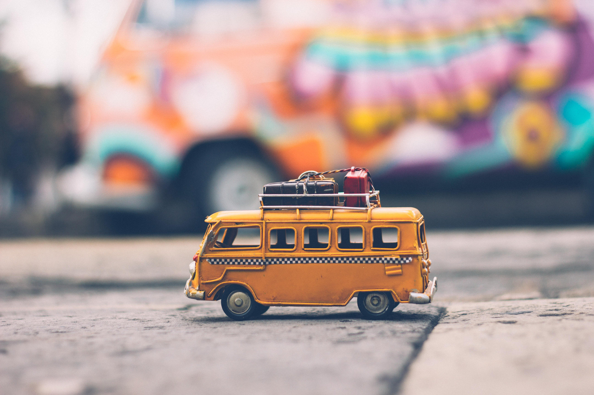
Trasporti
Passa sopra una linea o toccala, sulla mappa o nelle schede qui sotto, per vederla da sola.
Scorri la mappa di lato per vederla tutta.
Treno, linea FS45 Alba - Asti
Da Alba: treno delle ore 7:48 (+ servizio navetta dalla stazione dei treni di Neive alla scuola), anche per chi arriva al terminal dei bus di Alba dalle varie tratte (linea 120, linea 172, linea 108…). Per il ritorno, treno delle ore 13:40.
andata 7:48ritorno 13:40Bus da Alba
Bus delle 8:03 con fermata a Neive Rondò in partenza dalla stazione dei treni, per chi utilizza il servizio ferroviario Cavallermaggiore - Bra e per chi arriva al terminal dei bus di Alba con la linea 14 GTT. Per il ritorno, treno delle ore 13:40.
andata 8:03ritorno 13:40Bus da Asti
Bus delle 7:25 con fermata a Neive Rondò. Per il ritorno, bus delle 13:26 da Neive Rondò.
andata 7:25ritorno 13:26Pullman (Giachino)
Villanova - San Damiano - Baraccone (Via Priocca e Via Statale). Alle ore 7.55 Pullman per Neive Rondò.
7:55 per Neive RondòPullman (Geloso)
Canelli - Boglietto - Neive Rondò.
Pullman (Geloso)
S. Stefano - Boglietto - Neive Rondò.
Novità per rientro pomeridiano
Pullman (Geloso) Castagnole - Boglietto - S. Stefano B. - Canelli - Calamandrana - Nizza M.to.
Pullman (Fogliati)
Castiglione Tinella - Neive Rondò.
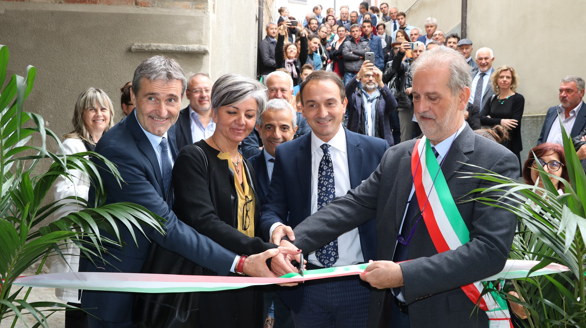
I nostri spazi
Nel 2018 è stato inaugurato il nuovo laboratorio di pasticceria 3, in occasione dell'inaugurazione dell'edificio del distaccamento e nel 2024 è stato completamente ristrutturato il laboratorio 1.
Il 7 giugno 2023 è stato inaugurato il bar didattico "Social corner".
Il cortile panoramico gode di una vista unica sul paesaggio delle Langhe ed è lo spazio ideale per apericena a tema didattico organizzati dagli insegnanti e dagli allievi della scuola.
L'Aula Magna è il luogo di incontro privilegiato per riunioni e seminari formativi.
Il palazzo Mostre e Congressi di Alba ospita ogni anno il nostro spazio per presentare la scuola durante il Salone dell'Orientamento. La Sala Ordet di Alba è teatro delle tradizionali feste di Natale e di fine anno scolastico mentre il Centro Sportivo R. Ceretto di Castagnole delle Lanze accoglie i tradizionali tornei sportivi a classi con cui si celebra l'inizio delle vacanze estive.
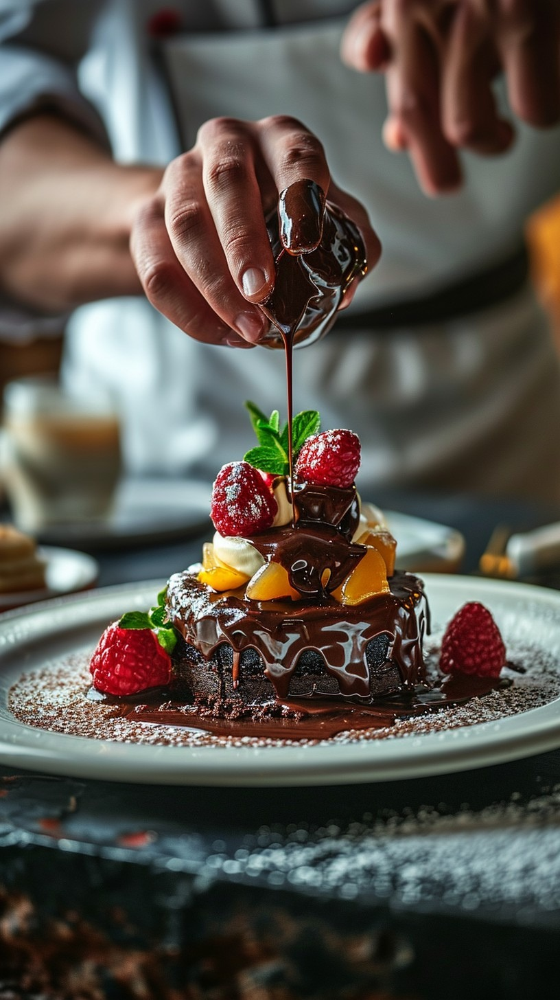